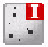

The Defect Map Window
To access: View > Defect Map
The Defect Map window provides a graphical view of all the defects detected from an inspection. It also provides the option to navigate and edit defects.
Description
Every defect in the Defect Map window is shown as a circle with specific color codes based on the type of defect. The currently selected defect is always enclosed with a colored box indicating the die type. Figure 2 illustrates the color codes used in the Defect Map window.
If you are viewing inspections in different colors using the Demarcate Inspections option, then the color code conventions given in Figure 2 do not hold true. Refer to “Demarcating Multiple Inspections” for information.
You can modify the dimensions of the circle depicting the defects by changing it through Utilities > Calibration Parameter Editor. Refer to “Calibration Parameter Modification” for details on the Calibration Parameter Editor utility.
At the top of the Defect Map window is the icon bar. The icon bar contains the main controls for the display of defects. The tool bar is illustrated in Figure 3 and described in Table 1.
Objects
Control |
Description |
|---|---|
Defect Display Modes |
Control the display of defects. If defects are not clustered, then the clustered defects icon is deactivated. |
All defects are shown. |
|
 |
Only isolated defects are shown. |
Only clustered defects are shown. |
|
Zoom Controls |
View any desired section or part of the Defect Map using the zoom controls. See “Additional Zoom Controls” for information on additional zoom controls that are not on the tool bar. |
Zoom in. |
|
Zoom out. |
|
Fit to window. The default zoom factor is 1.00. |
|
Set zoom factor. The current zoom factor is always displayed. You enter an exact value in this field or select from existing zoom factors in the drop-down list. The minimum zoom value that can be entered is 1.00. |
|
Set the color mapping scheme based on one of the following classification types:
|
|
Overlays |
Overlay the die cycle on the Defect Map. See “Using Overlays” for further details. |
Display die cycles. |
|
Show Origin |
Toggle display of the origin on the Defect Map. See “Show Origin” for further details. |
Show Classification Label |
Toggle the display of defect information, including the defect ID, classification code, and Primary Classification comments (if present) for all defects present in the Defect Map window. See “Show Classification Label” for further details. |